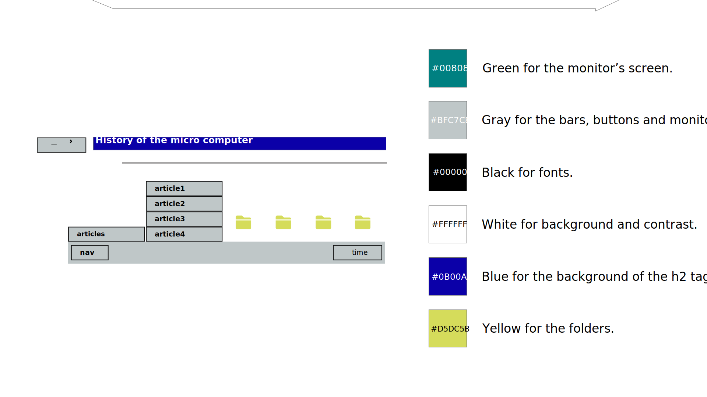
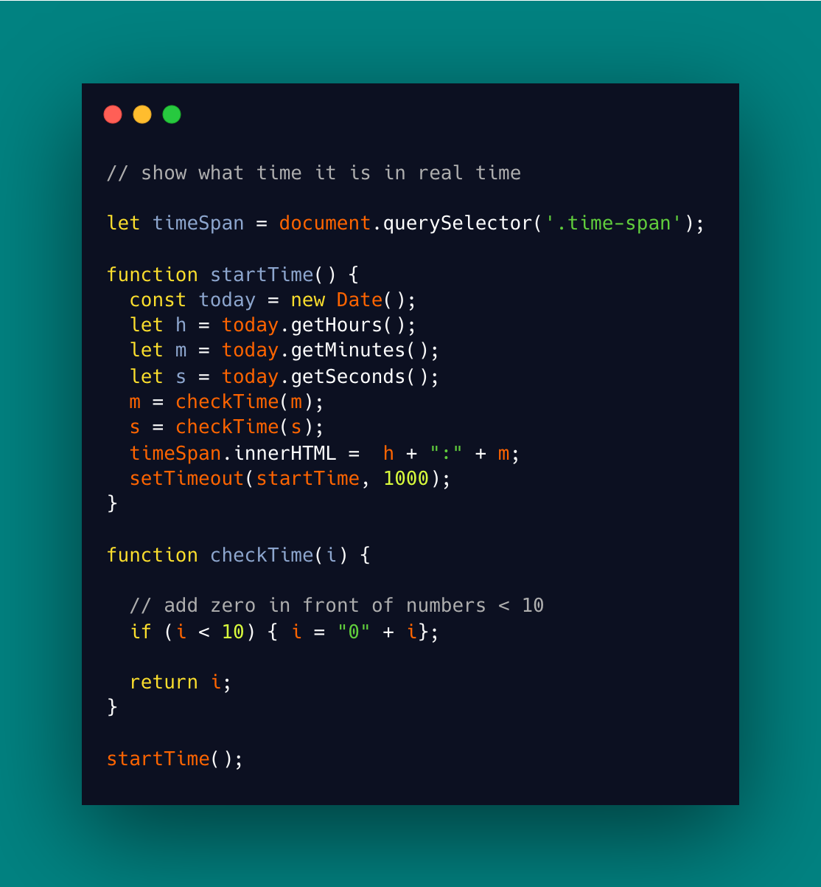

For this project, I decided to replicate the Microsoft Windows '95 interface.
I built the monitor and every type of button based on the actual color palette.
In the process, I learned to love wireframing.
My personal favorite? A function to simulate the clock.
You can see the final product here.